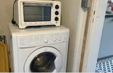

Chambre 1
1 lit double, 1 canapé

Lavergne · Raulhac · Cantal · Auvergne
Un gîte de caractère en pierre, blotti dans un hameau paisible au cœur du Parc naturel régional des Volcans d'Auvergne — pour se retrouver, cuisiner, randonner et ralentir.
Le gîte
Située dans le hameau de Lavergne, commune de Raulhac, la maison a été rénovée en conservant son âme : murs en pierre, poutres et charpente apparentes, poêle à bois pour les soirées fraîches. À l'intérieur, tout le confort pour cuisiner, se réunir autour de la grande table et se poser au coin du feu avec un livre.
Autour de la maison, une arrière-cour privée en partie clôturée, un espace repas en plein air et un barbecue au charbon de bois invitent à profiter des beaux jours. Le hameau est calme, les voisins accueillants, et un chemin de randonnée passe juste à côté.
Vous serez reçus par Martine et Claude, hôtes attentifs et réputés pour leur accueil chaleureux — le logement fait partie des 10 % de logements préférés sur Airbnb.

Où vous dormirez
1 lit double, 1 canapé

1 lit double, sous charpente

1 lit double

Équipements
Non inclus : Wifi, sèche-linge et climatisation. De quoi profiter pleinement du grand air du Cantal.
Avis voyageurs
« Coup de cœur voyageurs » — parmi les 10 % de logements préférés sur Airbnb.
« Impossible de mettre moins de 5 étoiles à cette maison. Le cadre est magnifique, la vue depuis la terrasse est magnifique. La restauration de cette vieille bâtisse a été faite de belle façon et avec beaucoup de goût. »
Stéphane
« Excellent séjour dans la charmante maison de Martine et Claude qui sont très accueillants et au petit soin pour leurs hôtes. L'environnement est magnifique et paisible. »
Pascal
« La maison est magnifique, posée dans un petit village paisible. Les paysages alentours sont magnifiques, et le poêle a donné à ce début d'automne pluvieux un côté chaleureux bienvenu. »
Jean-Marc
« Leur maison est adorable, au calme et très bien équipée notamment dans la cuisine. Elle se trouve dans un superbe environnement, très au calme. Je recommande à 1000 pour cent. »
Yann
« Nous avons passé un excellent séjour chez Martine. Jolie maison bien agencée avec tout le confort et très propre. En tout point conforme à la description. »
Annie
« Je ne peux que recommander la location de cette maison typique de la région qui allie authenticité, confort, calme, aménagée avec goût et en plus on est super bien accueilli par les hôtes. »
Guillaume
Localisation
La maison se trouve à Lavergne, sur la commune de Raulhac, dans le Cantal — à proximité d'Aurillac, de Vic-sur-Cère, du grand site de France le Puy Mary et du Super Lioran. Commerces à 2 km.
À découvrir aux alentours :
L'adresse exacte est communiquée après réservation.
Réserver
Disponibilités et tarifs en temps réel sur Airbnb. Annulation gratuite selon les conditions de l'annonce.